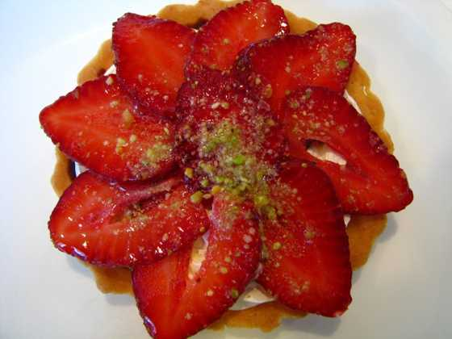

メニュー
手作りのシフォンケーキを製造・販売しています(Instagramプロフィールより)。フレーバー・サイズ・価格は準備中です。ご紹介できる内容が確認でき次第、こちらに掲載します。
準備中
種類・価格・ギフト対応:準備中
営業時間・定休日:準備中
電話:準備中





掲載写真はフリー素材のイメージです。店舗の実際の様子・商品ではありません。
ふんわり手作りの一切れを、また食べたくなる日常に。
茨城県常陸太田市の手作りシフォンケーキ
手作りのシフォンケーキを製造・販売しています(Instagramプロフィールより)。フレーバー・サイズ・価格は準備中です。ご紹介できる内容が確認でき次第、こちらに掲載します。
種類・価格・ギフト対応:準備中
営業時間・定休日:準備中
電話:準備中

イメージ例 以下は制作側が作成したイメージで、実在のお客様の声ではありません。
しっとりふわふわで、軽いのでペロリと食べてしまいました。
手土産に選びました。見た目もやさしくて喜ばれました。
気づくとまた注文している、そんなシフォンケーキです。
茨城県常陸太田市で手作りシフォンケーキを製造・販売しています。2024年3月15日にオープンしたとInstagramで案内されています。
店名の「りぴーと」の由来は確認できていません。ここでは制作側のイメージとして、「何度でも食べたくなる」という気持ちを込めた名前かもしれない、と考えてこのページの言葉を選びました。
Instagram:@rico2024.aaa

〒313-0125 茨城県常陸太田市大里町2636-2
営業時間・定休日:準備中 / 電話:準備中
写真はフリー素材のイメージで、店舗の実際の様子ではありません。